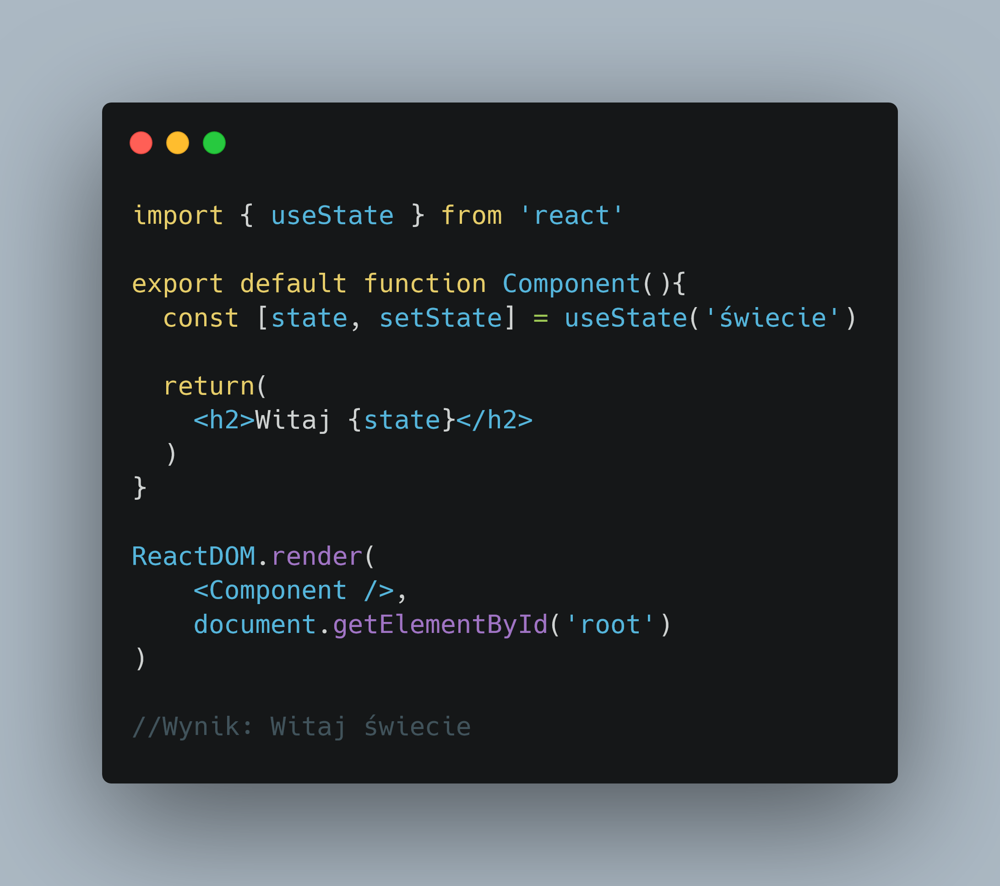
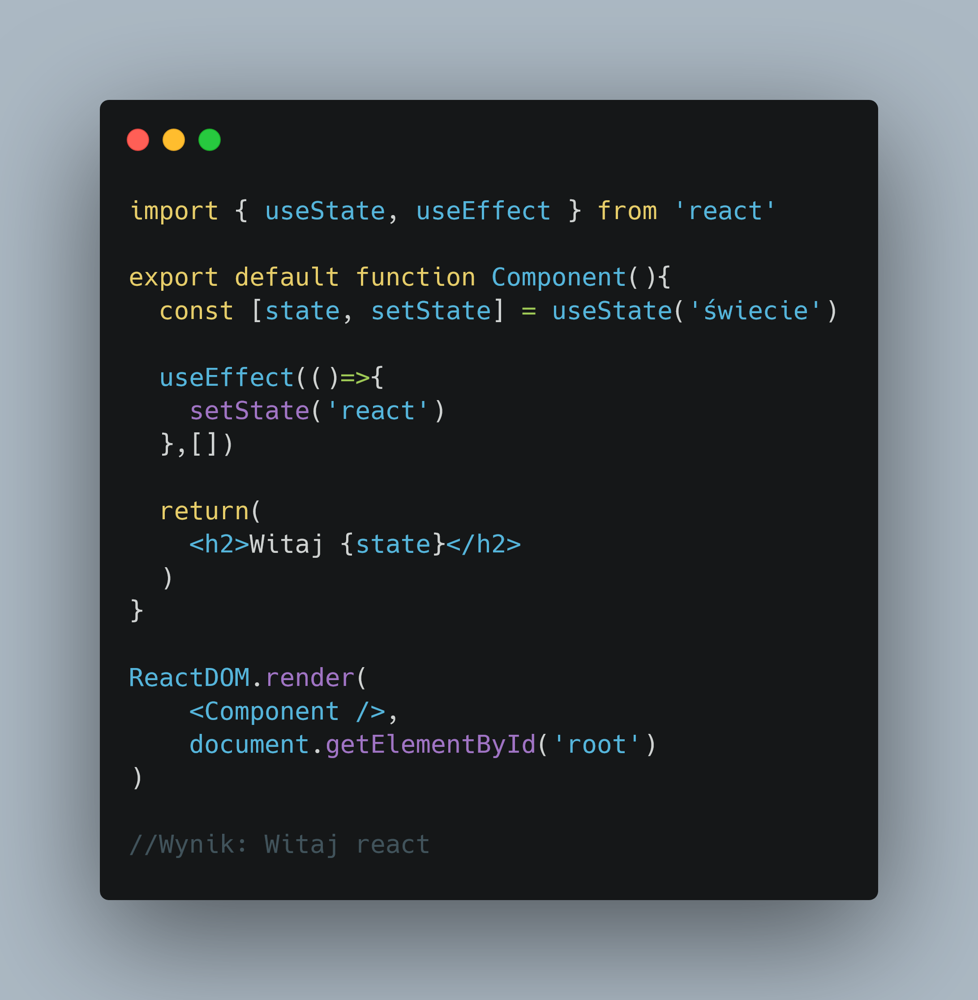
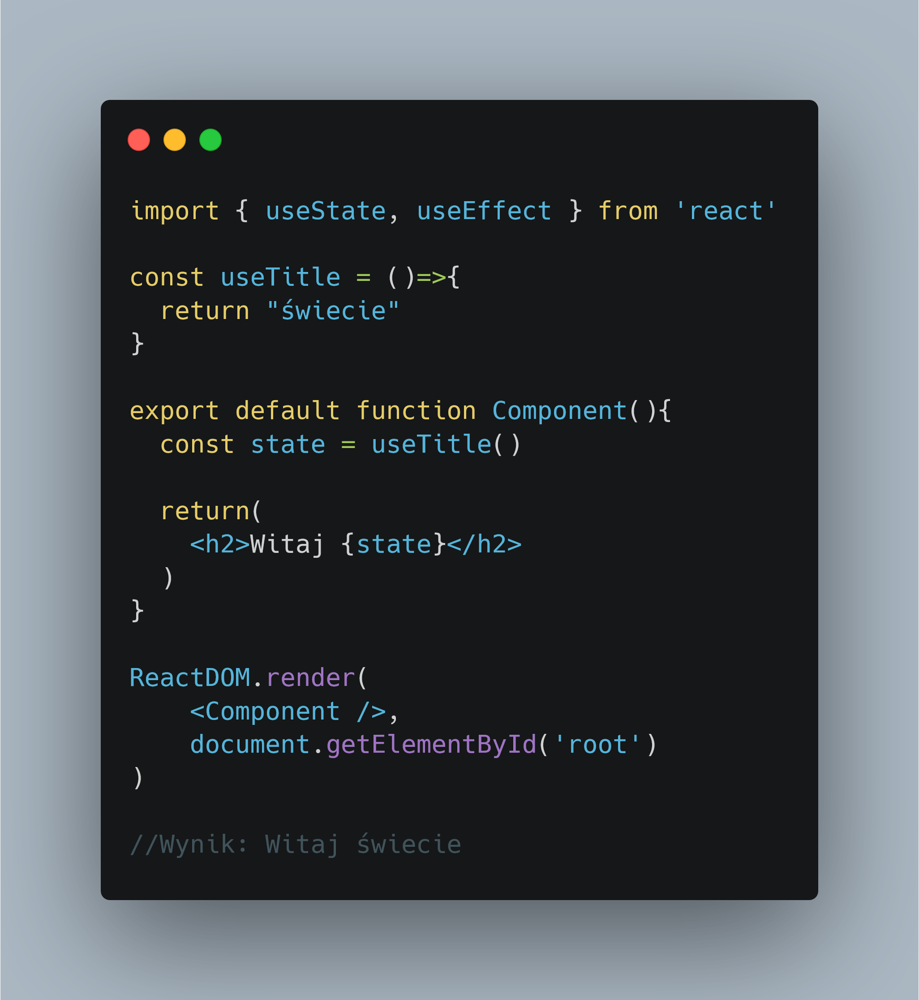

Reactowe Hooki
React zawiera w sobie mechanizm zaczepów (ang. hooks) oto 2 z nich
Zaczepów można używać jedynie w komponentach Funkcyjnych
Zaczepy w kodzie zawsze (a przynajmniej powinny) zaczynają się od słowa use np. useState, useEffect
Pierwszy z zaczepów, useState

Ten hook pozwala na zapisanie stanu w komponencie. Stan to zwykle jakaś informacja (łańcuch, liczba, tablica, Obiekt)
Która jest używana przez komponent lub inny hook
Kolejny z hooków useEffect
dzięki niemu tworzymy "efekty uboczne" dla naszego komponentu np. pobieramy dane lub wyświetlamy jakieś alerty
w useEffect można również zmieniać wartość stanu

jako drugi parametr zaczep useEffect przyjmuje Tablicę zależności
Dzięki niej możemy kontrolować kiedy efekt się wykona a kiedy nie
W tym przypadku efekt wykona się tylko podczas pierwszego renderowania komponentu
Jeżeli w tablicy umieścimy jakiś stan to efekt zostanie wykonany tylko podczas zmiany tego stanu
React daje możliwość tworzenia własnych zaczepów
w bibliotece React własne zaczepy traktowane są jak zwykłe funkcje javascript

Jest też jedna ważna zasada dotycząca używania zaczepów
Nie mogą być używane poza komponentami!!